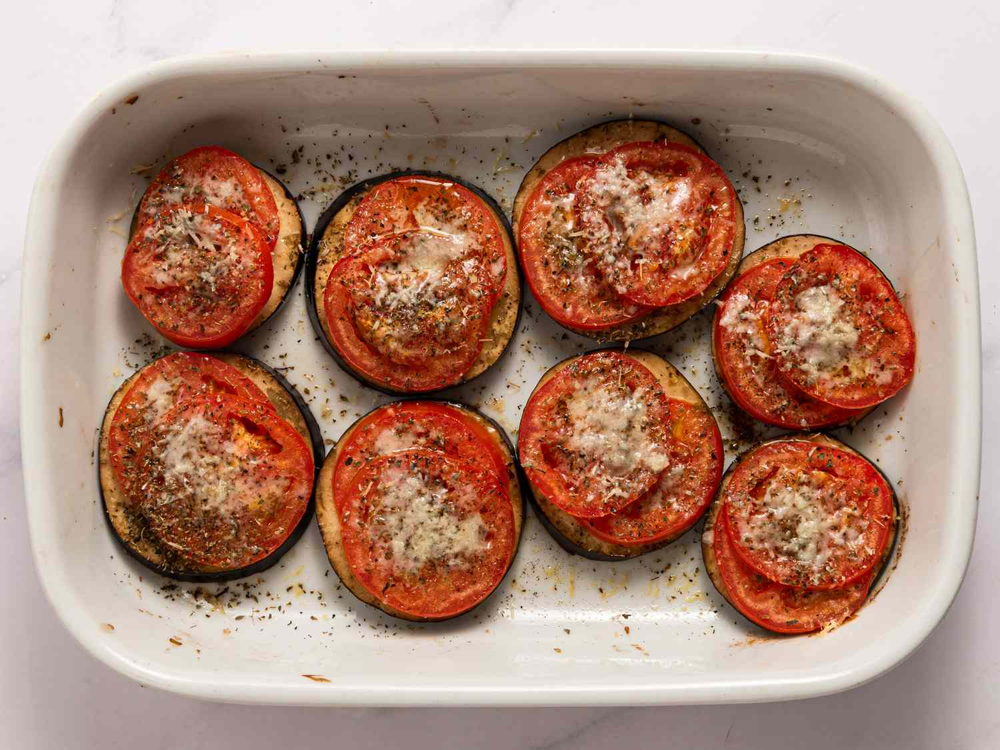

Baked Tomato Slices

Description:
Baked tomato slices are a delicious way to top leftover pasta!
Ingredients:
- 2 tablespoons olive oil, divided, or as needed
- 1 large tomato, cut into 1/2-inch-thick slices
- 1 sprig fresh rosemary, leaves stripped and finely chopped
- 1 clove garlic, minced
- salt and ground black pepper to taste
Steps:
-
Preheat the oven to 350 degrees F (175 degrees C). Brush a baking sheet
with about 1 tablespoon olive oil.
-
Arrange tomato slices on the baking sheet; sprinkle rosemary and garlic
on top. Brush with remaining 1 tablespoon olive oil; season with salt
and pepper.
- Bake in the preheated oven until tender, 5 - 10 minutes.
Go to Home